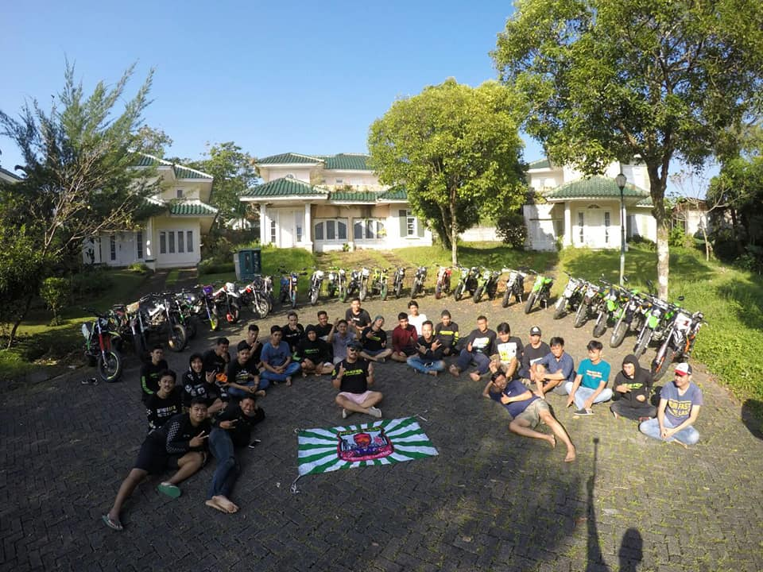

" Welcome to The Supermoto Life "

VISI
-
-Mewujudkan sebuah komunitas generasi muda yang positif tangguh,kekeluargaan,tertib lalu lintas dan berakhlak mulia
-Membangun kekeluagaan dan kokoh dalam komunitas dalam sesama member
-Menjadikan sebuah komunitas yang bermanfaat dan mempunyai nama harum di indonesia
-Mengenalkan nama komunitas ke seluruh tanah air Indonesia
MISI
-Menjaga silahturahmi antar sesama member dengan di adakannya KOPDAR (KOPI DARAT) setiap malam minggu
-Melakukan sosialisasi pada sesama member dan masyrakat sekitar akan pentingnya tertib dalam berlalu lintas
-Melakukan kegitan sosial yang bermanfaat untuk masyarakat (bakti sosial)
-Touring antar kota/pulau dengan tujuan bersilahturahmi dengan komunitas kracker lain di setiap daerah/kota
-Touring sampai 0 KM (sabang Aceh)
